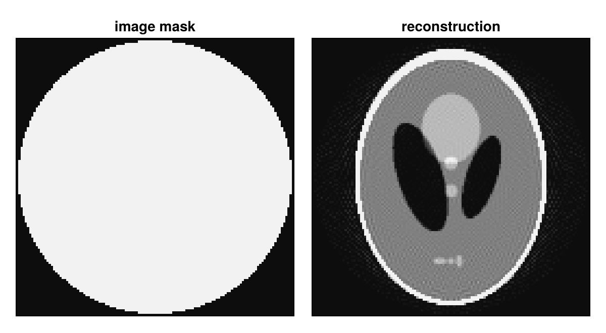
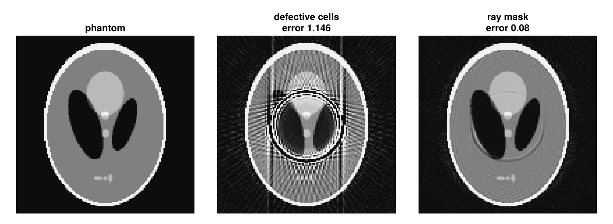
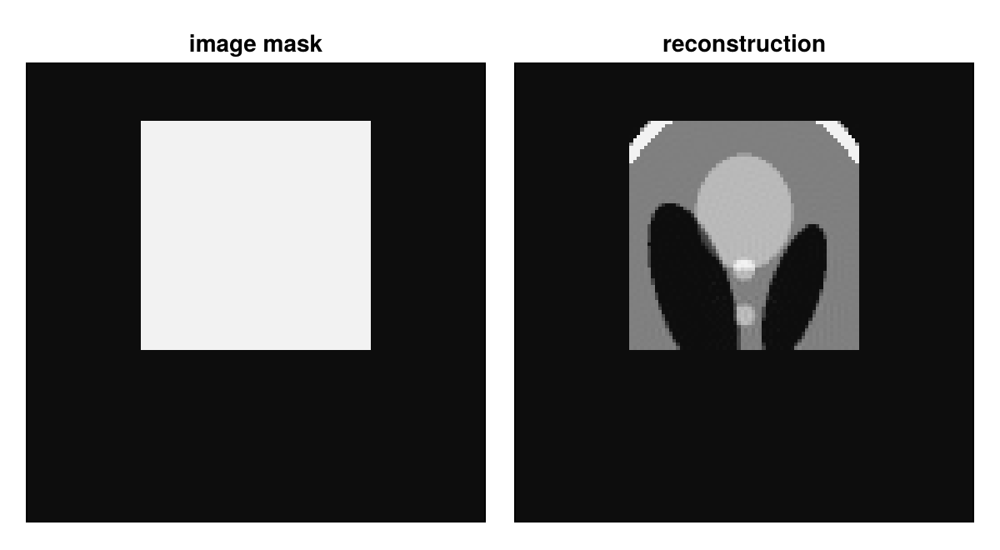

Use Masks
A projector has two masks, both Bool arrays in which true means "used" and false means "masked" (excluded). The image mask selects the voxels that are reconstructed; it is the mask of the ImageGeom. The ray mask selects the rays whose data is used; it is the keyword raymask of the projector. Masked voxels are zero in the image and in the back projection; masked rays are zero in the data and add nothing to the back projection. The projectors skip masked rays and trace rays only through the bounding box of the image mask. Masks explains what happens inside.
using CTOperators, ImagePhantoms, RegularizedLeastSquares, LinearOperatorCollection, CairoMakie
using ImageGeoms: axisdepth_figure (generic function with 1 method)The examples use the 2D Shepp-Logan phantom on 128 × 128 pixels and a parallel-beam scan with 180 views, reconstructed with 30 CGNR iterations:
n = 128
x_true = Float32.(phantom(axis(ImageGeom(; dims=(n, n)), 1), axis(ImageGeom(; dims=(n, n)), 2),
shepp_logan(SheppLoganToft(); fovs=(n, n)), 2))
geometry = parallel_beam(; angles=range(0, pi, 181)[1:180], nu=192, nv=1, du=1.0)
function reconstruct(op, y)
solver = createLinearSolver(CGNR, op; AHA=normalOperator(op), iterations=30)
reshape(solve!(solver, vec(y)), n, n)
end;The circular field of view
A rotating scanner sees the full object only within the circle that all views cover. The image mask MaskCircle() of ImageGeoms.jl restricts the image to the circle inscribed in it (a cylinder in 3D), which here lies inside the circle all views cover:
image = ImageGeom(MaskCircle(); dims=(n, n), deltas=(1.0, 1.0))
op = JosephProjector(image, geometry)
x = reconstruct(op, op * x_true);The reconstruction is zero outside the circle. The phantom lies inside it, so the data are the same as without the mask, but fewer voxels are unknown: after 30 iterations the error is 0.062 with the mask and 0.075 without it.

Any Bool array of the image size is a mask: ImageGeom(; dims, deltas, mask). ImageGeoms.jl also offers MaskEllipse() and MaskAllButEdge().
Defective detector cells
A defective cell measures nothing useful in any view. Here three cells of the detector row report zero:
defective = [70, 71, 120]
image = ImageGeom(; dims=(n, n), deltas=(1.0, 1.0))
op = JosephProjector(image, geometry)
y = op * x_true
y[defective, :, :] .= 0;A defective cell lies at the same distance from the rotation axis in every view, so its wrong values form a circle in the reconstruction: a ring artifact. The ray mask excludes these rays. It has the size of the data, (nu, nv, nviews) (see datasize), so raymask[u, v, view] belongs to detector cell (u, v) in view view; a vector with one entry per data element works too.
raymask = trues(size(y))
raymask[defective, :, :] .= false
op_masked = JosephProjector(image, geometry; raymask)
x_rings, x_masked = reconstruct(op, y), reconstruct(op_masked, y);
The figure shows the reconstructions in the color window 0 to 0.4, where the soft tissue of the phantom is visible, and the relative error $\|x - x_\text{true}\| / \|x_\text{true}\|$. With the ray mask the rings almost disappear (error 0.08; 1.15 without the ray mask, 0.075 with intact data): the lines of the defective cells are not measured, but their wrong values no longer enter the fit. The ray mask works the same way for any rays whose data cannot be used, e.g. truncated or saturated ones.
A region of interest
If only part of the object matters, the image mask can be a box around it, here deliberately off center. The rays are then only traced through this box: a centered mask of 64³ voxels in a 256³ volume, on an AMD Radeon RX 7900 XT, made the projections 30 to 43 times faster in our benchmarks.
roi = falses(n, n)
roi[33:96, 49:112] .= true
image = ImageGeom(; dims=(n, n), deltas=(1.0, 1.0), mask=roi)
op = JosephProjector(image, geometry)
x = reconstruct(op, op * x_true);
Here the data were simulated with the masked operator, so they contain nothing from outside the region. With measured data of the whole object, the region of interest misses the contributions of the object outside it: reconstructing a region alone from such data (interior tomography) needs more than a mask.
Masks and other functions
subset(op, views)keeps the part of the ray mask for these views;adaptmoves both masks to the device.- The masks are
Boolarrays on the device of the operator, whatever its element type; a ray mask from any device is copied there. The ray mask takes one byte per data element, and the forward projection with an image mask allocates the masked image on every call. rowsumsandcolsumsinclude the masks, and so do the normalizations of ordered-subset methods built on them.- The masks are part of the operator in every solver and in automatic differentiation.
This page was generated using Literate.jl.